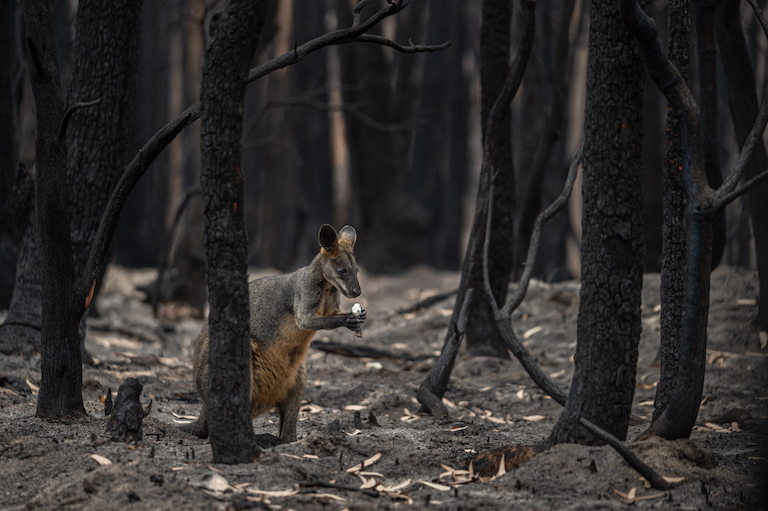
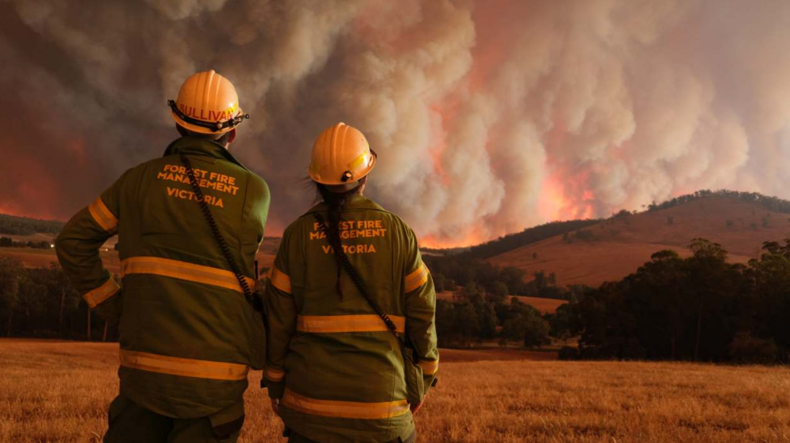
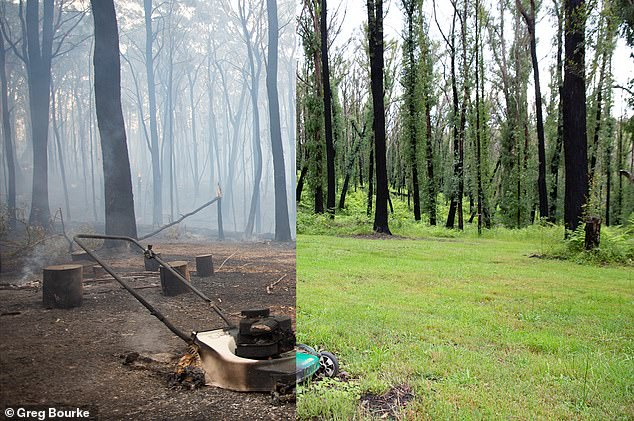
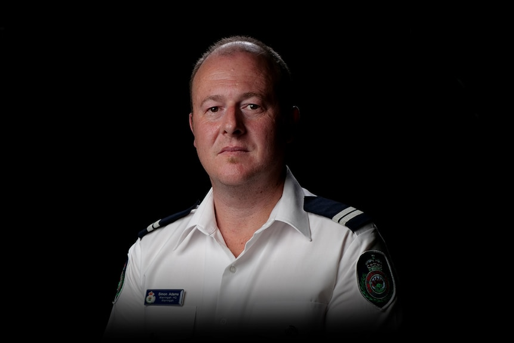
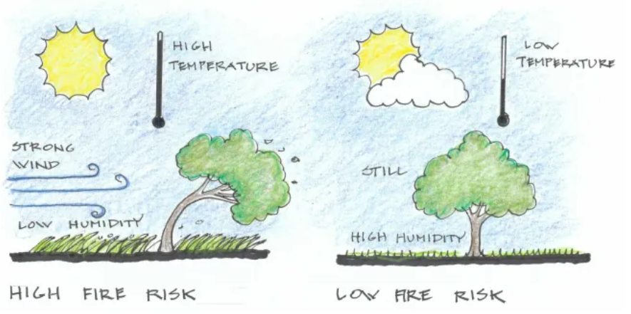

Bushfire Awareness
Unplanned vegetative fires are literally bushfires. Scrub fires, grass fires, and forest fires are all part of Bushire. Throughout the course of thousands of years, bushfires have been a fundamental, intricate, and natural element of the Australian landscape. Trees, homes, and the ecosystem can all be severely impacted by bushfires. Talking about the bushfires makes us aware of the terrible loss of biodiversity and the precarious balance of our ecosystems. Taking about it can be a step towards the prevention of catastrophic loss of biodiversity and the unstable balance of our ecosystems.
“In the aftermath of devastation, A wallaby stands alone among burned trees probably thinking of good old days”. Image by Jo-Anne McArthur / We Animals.
Victorian History of Bushfires
“Fire Management team witnessing brutality of nature. Image taken from ffm.vic.gov.au”
- 1851, Black Thursday
- 1898, Red Tuesday
- Early 1900s
- 1926
- 1932
- 1938-1939, Black Friday
- 1942
- 1943-1943
- 1944
- 1952
- 1962
- 1965
- 1969
- 1972
- 1977
- 1980-1981
- 1983
- 1983, Ash Wednesday
- 1985
- 1997
- 1998
- 2002
- 2003
- 2005-2006
- 2006-2007
- 2009, Black Saturday
- 2013
- 2015
- 2019-2020
Causes of Bushfire
- Suspicious causes account for 37%.
- Accidental causes constitute 35%.
- Deliberate actions are responsible for 13%.
- Natural sources like lightning contribute to 6%.
- Re-ignition/spot and other reasons make up 5% and 4% respectively.
Share of Bushfire Ignitions in Australia (November 2019): A Breakdown by Cause.". Statistics taken from statista.com
Endangered Wildlife
Source: Youtube.com/The Sun
The wildlife's quality of life is always greatly impacted by bushfires. According to biologist Chris Dickman, over a billion creatures have perished nationwide; this number does not include fish, frogs, bats, or insects.
Environmental organisations produced a list of wildlife species for which they have immediate concerns, and the Australian government promised $50 million in 2020 to aid in the rescue and protection of wildlife affected by the problem.
However, the list is by no means comprehensive, and until specialists are able to visit ecosystems devastated by fire and perform assessments, it will be difficult to determine the precise impact on plant and animal life.
Among the animals impacted by bushfires are the following.
- Glossy black-cockatoo (Kangaroo Island sub-species)
- Kangaroo Island dunnart
- Koala
- Hastings River mouse
- Regent honeyeater
- Blue Mountains water skink
- Brush-tailed rock-wallaby
- Southern corroboree frog
- Quokka
- Western ground parrot id="weatherApi"
- Northern eastern bristlebird
- Greater glider
Prevention
Bushfires, often triggered by factors like climate change or human mistakes, present significant dangers to lives, property, and the natural ecosystem. Crucial measures for prevention include complying with Australia's environmental laws, staying updated on weather forecasts, understanding the risk in your area, avoid parking on parched lawns, responsibly handling potential fire-starters like cigarette butts, and vigilantly supervising all active fires and maintenance of the landscapes.
The left shows Greg Bourke's backyard in Mount Tomah in the Blue Mountains in December 2019 while the right shows the same spot in December 2020, (Caption & Image taken from Dailymail.com)
Testimonials
Sydney Rural Fire Service (RFS) firefighter Simon.Image taken from abc.net.au
Simon was having a usual day when he had to rush to an emergency call in Central Coast where bushfire was at its peak on November 8. He was told that the nearby resident needed help and the rescue mission began.
Simon said, “ The speed and the ferocity of the fire … was three or four times what we'd seen before, He was in real trouble … he was surrounded by fire and he didn't know what to do, When I was driving … I could not see more than about 2 metres. The adrenaline was really pumping. You've got to try and stay calm as much as you can. We know someone needs our help. It was just a wall of embers … like the sparks coming off the Sydney Harbour Bridge on New Year's Eve. The person that was actually inside the house, he was inside with his dog and a couple of cats, all in one room.He did not want to leave … he was pretty adamant.” He and his dog was saved later on due to quick thinking of Simon. He later on reflected on his life saving journey as
“ You take up risk versus reward … it just seemed like the right thing to do. Looking back, I would probably think twice if I had time to really think about it. When fire can travel that quickly and that ferociously … it really makes you worry about what's going to happen with the rest of the state over the whole fire season,.”
Check weather on my area
This tool can be used to chek if your area is under threat right now of bushfire. This weather api takes data from "OpenWeather". It returns many attributes, However, right now we are only interested in Wind, Humidy and Temperature.
The image can be taken as reference to check if you have higher chances of bushfire in your area.
Strong winds, high temperatures and low humidity will increase the severity of a bushfire. Image taken from research.csiro.au.

humidity
Wind Pressure
About
This website is part of the final assignment of Programming for Design Subject that is taught by Riley Post. This last assignment is called One Page Site.
This website is created by Harris Idrees, a final semester student of Bachelor of Software Engineering. Technologies used are HTML, CSS and Javascript.
All of the code files can be found at my Github.References
BBC News.(2021) Australia bushfires: 'It's like fireballs exploding in the air' - BBC News. Available at: https://www.youtube.com/watch?v=Iaxc2RuRnCQ Accessed: 17/10/2023
Elizabeth Claire Alberts,(2020) Scientists urge reassessment of threatened species after Australian bushfires Available at: https://news.mongabay.com/2020/08/scientists-urge-reassessment-of-threatened-species-after-australian-bushfires/ (Accessed 17/10/2023)
research.csiro.au ,Bushfire best practice guide, Available at https://research.csiro.au/bushfire/bushfire-basics/how-bushfires-behave/weather/(Accessed 17/10/2023)
ForrestFireManagementVictoria,(2023) A chronology of major
bushfires in Victoria from 2020 back to 1851, Available at:
Statistica,(2023) Share of bushfire ignitions in Australia as of November 2019, by cause, Available at: https://www.statista.com/statistics/1104822/australia-causes-of-bush-fire-ignitions/ (Accessed at 17/10/2023).
Trees Down Under, (2021) 10 Tips to Effectively Reduce & Prevent Bushfires, Available at: https://treesdownunder.com.au/tips-reduce-prevent-bushfires/#:~:text=Routine%20grass%20mowing%20and%20raking,a%20bushfire%20in%20your%20place (Accessed at 17/10/2023).
Shive Prema,(2021) One year on a survivor of the black summer bushfires has shared an incredible transformation photo – but says there is a long way to go,Available at : https://www.dailymail.co.uk/news/article-9144915/Australian-bushfire-survivor-shares-incredible-transformation-photo-blazes.html (Accessed at: 17/10/2023).
Shive Prema,(2021) One year on a survivor of the black summer bushfires has shared an incredible transformation photo – but says there is a long way to go,Available at : https://www.dailymail.co.uk/news/article-9144915/Australian-bushfire-survivor-shares-incredible-transformation-photo-blazes.html (Accessed at: 17/10/2023).
The Sun.(2020) Woman saves scorched koala from Australian bushfire. Available at: https://www.youtube.com/watch?v=KHGgKRDHHvU (Accessed at: 17/10/2023).
The Sun.(2020) Woman saves scorched koala from Australian bushfire. Available at: https://www.youtube.com/watch?v=KHGgKRDHHvU (Accessed at: 17/10/2023).
theguardian.(2020) A billion animals: some of the species most at risk from Australia's bushfire crisis. Available at: https://www.theguardian.com/australia-news/2020/jan/14/a-billion-animals-the-australian-species-most-at-risk-from-the-bushfire-crisis (Accessed at: 17/10/2023).
abc.net, The stories behind the life or death moments that defined the Australian bushfire crisis, Available at :/https_www.abc.net.au/?url=https%3A%2F%2Fwww.abc.net.au%2Fnews%2F2020-02-03%2Finside-the-australian-bushfires-crisis%2F11890458 (Accessed at: 17/10/2023).